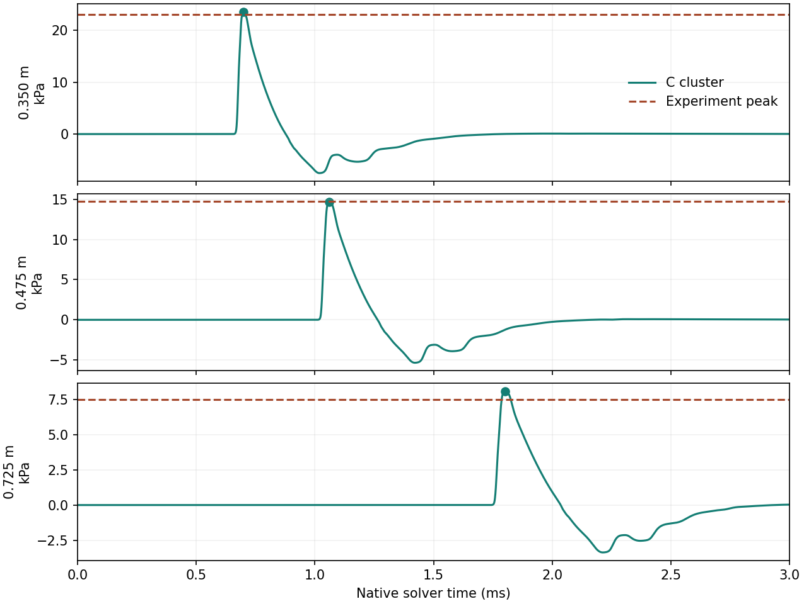

C 集群作业 8953576 正常终止，三条压力时程完整覆盖固定 0–3 ms 窗口。全组三点实测峰值 MAPE 为 3.40%，论文数值参考组为 13.46%。人工入选待审核。
限幅作业采用 8 个 MPI 进程，迎风基线为串行并在 2.914 ms 触及调度时限。原文图 6.7 的峰值用于固定比较， 图 6.8 的面板和时钟仍待核实。
| 固定半径 | 实测 kPa | 论文 kPa | 本次 kPa | 峰时 ms | 实测 APE | 论文 APE |
|---|---|---|---|---|---|---|
| 0.350 m | 23.076 | 20.566 | 23.565 | 0.700 | 2.12% | 14.58% |
| 0.475 m | 14.737 | 13.055 | 14.700 | 1.061 | 0.25% | 12.60% |
| 0.725 m | 7.476 | 7.122 | 8.062 | 1.801 | 7.83% | 13.19% |

原文图 6.7 · 工况、网格与数值设置 · 同窗迎风基线对照 · 终态评分 · 原生压力文件